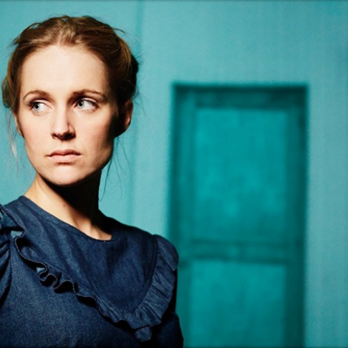

Agnes Obel
Agnes Caroline Thaarup Obel (born 28 October 1980) is a Danish singer, songwriter, and musician. Her first album, Philharmonics, was released by PIAS Recordings on 4 October 2010 and was certified gold in June 2011 by the Belgian Entertainment Association (BEA) after selling 10,000 Copies. At the Danish Music Awards in November 2011, Obel won five prizes, including Best Album and Best Debut Artist. Citizen of Glass, her third album, received the IMPALA Album of the Year Award 2016.
Artist's Discography
Recommended Albums